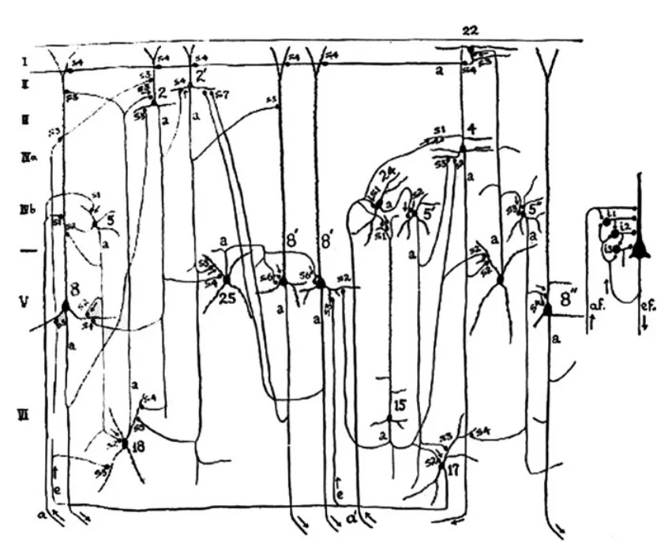
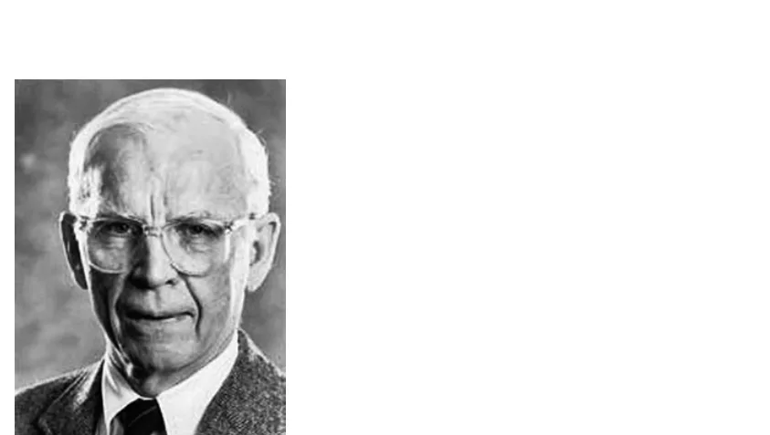
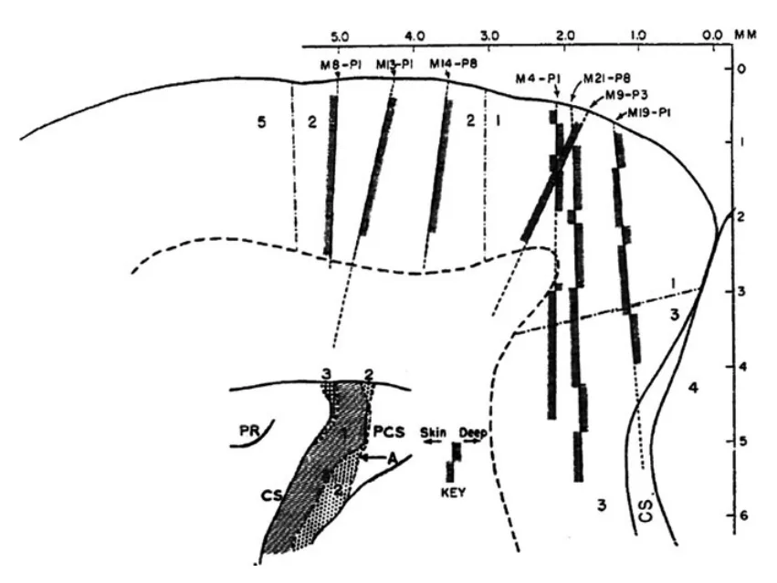
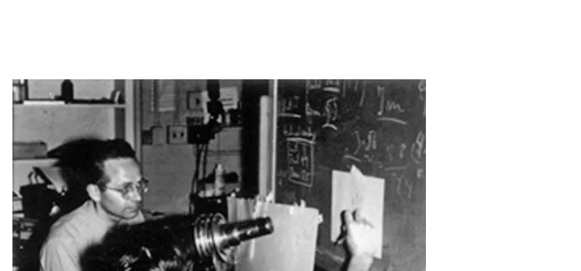
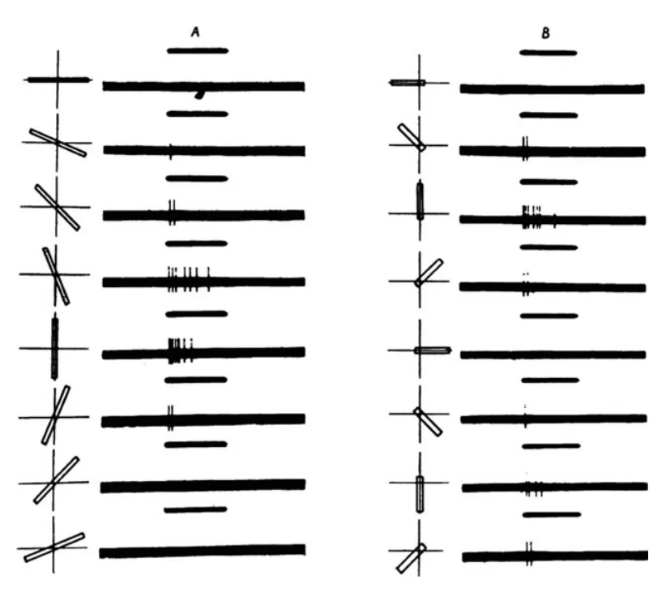
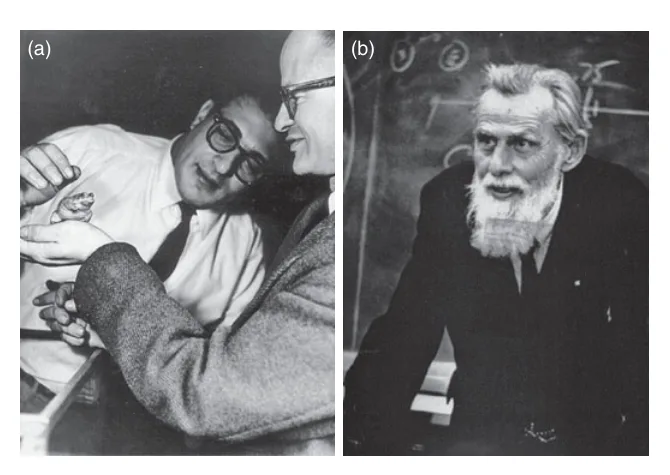
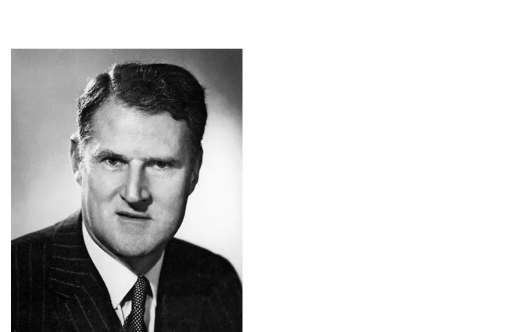
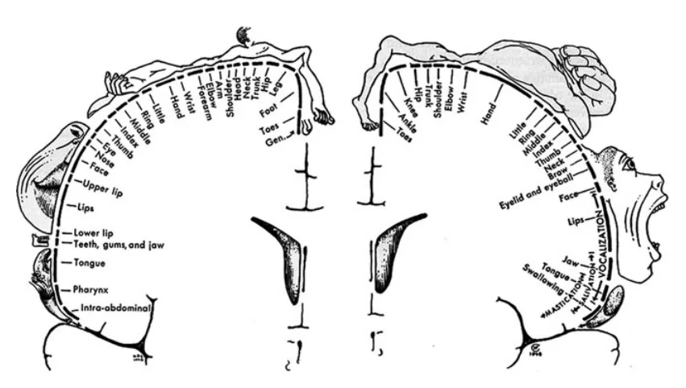
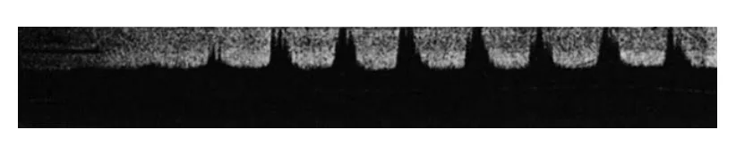

Chương 10 — Mạch thần kinh: Cột vỏ não và xử lý vỏ não
Chương 10
Mạch Thần Kinh: Cột Vỏ Não và Xử Lý Vỏ Não
Thập niên 1950 là thời kỳ hoàng kim của những khám phá về vỏ não, chứng kiến những bước đi đầu tiên của các nhà tiên phong khi đưa vi điện cực ghi nhận vào những vùng lãnh thổ chưa được biết đến của các hệ thống vỏ não chính. Từ chỗ hầu như không biết gì về tổ chức chức năng của vỏ não, đến cuối thập kỷ, các nhà sinh lý học thần kinh đã có khái niệm cột vỏ não như một nguyên lý tổ chức. Hình người thu nhỏ (homunculus) cho vỏ não cảm giác thân thể và vỏ não vận động đã được hé lộ; vỏ não thị giác được mở ra cho một hướng tiếp cận song song nhằm xác định các kích thích thị giác và các bộ phát hiện đặc trưng; có những manh mối đầy hứa hẹn rằng vỏ não thính giác chứa một bản đồ tần số; và vỏ não vận động được phát hiện chứa các mạch kích thích và ức chế bên trong phạm vi hình người vận động. Một phần nhô ra của vỏ não là hành khứu giác cũng được phát hiện biểu diễn mùi hương bằng các mô hình hoạt động không gian tương tự như tổ chức không gian của các hệ thống vỏ não cảm giác. Những phát hiện này đã đặt ra chương trình nghị sự cho nửa thế kỷ nghiên cứu vỏ não tiếp theo.
Trong khóa học giải phẫu thần kinh vào năm thứ nhất tại Trường Y Harvard năm 1956, tôi háo hức mong chờ các bài giảng về vỏ não, kỳ vọng có được cái nhìn đầu tiên về cách các tế bào vỏ não có thể tạo ra hoạt động tinh thần (ngày nay, chúng ta gọi là “cơ sở thần kinh của nhận thức”, nhưng bản chất vẫn là một). Alfred Pope, một nhà hóa học thần kinh tiên phong xuất sắc, là người giảng bài. Ông tỉ mỉ dẫn chúng tôi đi qua giải phẫu của vỏ não, từng tế bào một, như được mô tả bởi Ramón y Cajal bằng phương pháp nhuộm Golgi nửa thế kỷ trước đó, bắt đầu từ bề mặt—tế bào tháp nhỏ ở lớp 2, tế bào tháp lớn hơn một chút ở lớp 3, tế bào hình sao (stellate) ở lớp 4, neuron tháp lớn ở lớp 5, và tế bào đa hình lớn ở lớp 6. Sau đó, ông đi qua các neuron trung gian (interneuron): tế bào Martinotti ở lớp 1, tế bào lưỡng cực ở lớp 2 và 3, cùng các loại khác ở các lớp sâu hơn. Tất cả được sắp xếp một cách tuyệt đẹp. Khi đã trình bày toàn bộ trong những sơ đồ chi tiết về các tế bào, ông lùi lại khỏi bảng đen, ngắm nhìn thành quả của mình, quay sang chúng tôi và nói: “Và tất nhiên là chúng ta chẳng có chút manh mối nào về việc chúng làm gì cả.”
Cột Vỏ Não
Rafael Lorente de No. Trái ngược với cách mô tả theo từng lớp này, một khung khái niệm khác đã được đưa ra bởi một trong những học trò cũ của Ramón y Cajal, Rafael Lorente de No. Năm 1938, ông được John Fulton mời đóng góp một chương về vỏ não cho cuốn Physiology of the Nervous System (Phụ lục 10.1). de No không chỉ cung cấp một mô tả bậc thầy về các thành phần neuron của vỏ não (Hình 10.1) mà còn nhân cơ hội này đề xuất một giả thuyết mới về tổ chức chức năng của chúng (Phụ lục 10.1). Ông viết,
Ngoại trừ lớp I và lớp II, tất cả các lớp vỏ não đều chứa các tế bào có tiếp xúc synap với các sợi hướng tâm đặc hiệu, do đó sẽ không thỏa đáng nếu gọi bất kỳ lớp nào là “tiếp nhận” (receptor). Mặt khác, mọi lớp trừ lớp I đều có sợi trục đi tới chất trắng, và vì vậy không lớp nào có thể được gọi là “thực hiện” (effector) (312).
Đối với các kết nối nội tại tối quan trọng—tức là các kết nối giữa các tế bào bên trong và giữa các lớp vỏ não—Lorente de No đề xuất rằng chúng diễn ra trong các hình trụ thẳng đứng gồm các tế bào, mỗi hình trụ lấy một sợi hướng tâm đặc hiệu làm trục:
Tất cả các thành phần của vỏ não đều được đại diện trong đó, và do đó nó có thể được gọi là một đơn vị cơ bản, trong đó, về mặt lý thuyết, toàn bộ quá trình truyền xung động từ sợi hướng tâm đến sợi trục ly tâm có thể được thực hiện (311).
Có thể thấy rằng điều này về cơ bản xác định hình trụ hướng tâm như một đơn vị đầu vào–đầu ra, tương đương với đơn vị phản xạ cơ bản của tủy sống, điểm khác biệt là đơn vị vỏ não nằm trong một môi trường xử lý thông tin phức tạp hơn nhiều.
Chìa khóa trong khái niệm của Lorente de No là các kết nối bên trong đơn vị hướng tâm được tổ chức thành các vòng lặp có thể thiết lập các mạch dội lại (reverberating circuits), tức là các mạch mà trong đó xung động sẽ kích hoạt các tế bào để phản hồi kích thích ngược trở lại, duy trì sự kích thích vô thời hạn. Một cơ chế kiểu này dường như là cần thiết cho hoạt động duy trì vốn làm nền tảng cho cả trí nhớ ngắn hạn và trí nhớ dài hạn. Lưu ý rằng hoạt động duy trì này trong một đơn vị vỏ não tương đồng với hoạt động duy trì trong một bộ tạo mô hình trung ương (CPG), như đã thảo luận trong Chương 9.
Việc đưa giả thuyết đáng chú ý này vào trong một cuốn sách giáo khoa là điều bất thường, nhưng như chúng ta sẽ thấy, nó không hề bị bỏ quên. Về phương diện này, nó báo trước cuốn sách giáo khoa của Donald Hebb một thập kỷ sau đó, vốn chứa đựng một gợi ý về sơ đồ đấu nối đặt nền móng cho các mạch học tập và trí nhớ (Chương 12).
Vernon Mountcastle. Vào thời điểm tôi học lớp giải phẫu thần kinh, các nhà nghiên cứu ở cả Bắc Mỹ và châu Âu bắt đầu sử dụng các phương pháp vi điện cực mới để khám phá vỏ não. Herbert Jasper, đồng nghiệp của Penfield tại Viện Thần kinh học ở Montreal, là một trong những người đầu tiên đưa vi điện cực vào vỏ não của mèo được gây mê để ghi nhận các loại hoạt động tế bào khác nhau ở các lớp khác nhau. Một người khác là Denise Albe-Fessard ở Paris. Nhưng bước đột phá then chốt đến từ việc phát hiện ra cột vỏ não bởi một nhà sinh lý học thần kinh tại Trường Y Đại học Johns Hopkins, Vernon Mountcastle.
Mountcastle (Hình 10.2A) sinh năm 1918 tại Kentucky và được đào tạo tại Trường Y Đại học Johns Hopkins. Sau khi phục vụ trong Thế chiến II, ông trở lại Hopkins làm việc tại Phòng thí nghiệm Sinh lý học Thần kinh Bard, do Phillip Bard—một người đi đầu trong sinh lý học về hành vi vận động và cảm xúc—thành lập. Đầu thập niên 1950, Mountcastle thực hiện một loạt nghiên cứu ghi nhận vi điện cực về biểu diễn trung ương của các đáp ứng xúc giác. Công việc này bắt đầu với đồi thị và, vì đồi thị là cửa ngõ dẫn vào vỏ não, đã dẫn tiếp lên vỏ não.
Trong một cuộc phỏng vấn gần đây (Grauer, 2007), Mountcastle nhớ lại ngày đầy kịch tính năm 1955 khi ông đang nghiên cứu kết quả thí nghiệm trên não mèo, ghi lại đặc tính của từng tế bào từ các lớp đâm xuyên kế tiếp nhau. “Tôi viết chúng theo chiều dọc trên một tờ giấy màu vàng,” ông nhớ lại. Đột nhiên việc ghi chép theo chiều dọc giúp ông nhìn ra mô hình kinh ngạc trong não: Các tế bào da nằm chồng lên các tế bào da, các tế bào khớp nằm chồng lên các tế bào khớp và cứ thế, kéo dài thành các cột từ bề mặt não xuyên suốt qua sáu lớp của vỏ não. “Đó là khoảnh khắc ‘aha’ của tôi.”
Chiến lược thực nghiệm của ông là thực hiện các mũi đâm hoàn toàn theo hướng xuyên tâm vào vỏ não. Trong những trường hợp này, như mô tả trong hồi ức ở trên, ông thấy rằng tất cả các “đơn vị” (tức tế bào) mà ông bắt gặp đều có xu hướng phát xung đáp ứng với cùng một loại kích thích da (tức là chạm nhẹ, chạm sâu, cử động khớp, v.v.). Ngược lại, khi điện cực của ông được đưa vào theo hướng xiên để đi ngang qua vỏ não, ông gặp một loạt các tế bào đáp ứng với các loại kích thích khác nhau. Trong bài báo năm 1957, phần cuối cùng (tr. 430–431) của mục thảo luận đã đưa ra kết luận của ông về những phát hiện này:
IV. MỘT GIẢ THUYẾT VỀ TỔ CHỨC CHỨC NĂNG CỦA VỎ NÃO
Dữ liệu được báo cáo trong các bài báo này ủng hộ quan điểm rằng có một đơn vị tổ chức cơ bản trong vỏ não thân thể được tạo thành từ một nhóm tế bào thẳng đứng kéo dài qua tất cả các lớp tế bào. Các neuron của một nhóm như vậy liên quan đến cùng một, hoặc gần như cùng một, trường tiếp nhận ngoại biên trên bề mặt cơ thể. Chúng được kích hoạt bởi cùng một loại kích thích ngoại biên, tức là chúng thuộc cùng một phân nhóm phương thức (modality subgroup). Từ quan sát cuối cùng này suy ra rằng chúng phải biểu hiện các đặc tính phát xung giống nhau, và thực tế chúng đúng là như vậy, đặc biệt liên quan đến sự thích nghi với các kích thích ổn định. Cuối cùng, tất cả các tế bào của một cột thẳng đứng như vậy phát xung ở độ trễ ít nhiều giống nhau đối với một kích thích ngoại biên ngắn. Do đó, chúng được nhóm lại thành một mô hình phát xung ban đầu. Cần nhấn mạnh rằng phân tích này dựa hoàn toàn vào đáp ứng đầu tiên của các tế bào vỏ não đối với một kích thích ngoại biên, tức đáp ứng lặp lại sớm, mà các thí nghiệm của chúng tôi cũng như của những người khác (3) đã cho thấy là cực kỳ nhạy cảm với các thông số của kích thích. Có khả năng là ngay cả trạng thái gây mê nhẹ trong các mẫu chuẩn bị của chúng tôi cũng đã ức chế nghiêm trọng các mô hình phát xung muộn hơn và phức tạp hơn, vốn rất hiếm khi được chúng tôi quan sát thấy (19, Hình 9-f). Tuy nhiên, điều này gợi ý rằng các tế bào vỏ não sẽ được sắp xếp tuần tự theo thời gian thành nhiều mô hình phát xung khác nhau, và một mục tiêu thực nghiệm chính hiện nay là phân tích chi tiết hoạt động muộn hơn này.
Dữ liệu của chúng tôi không nên được diễn giải là chỉ ra rằng tất cả các tế bào của cột thẳng đứng này nhất thiết được kích hoạt đơn synap bởi các sợi hướng tâm đồi thị-vỏ não đặc hiệu, mặc dù các nghiên cứu giải phẫu của Lorente de No (15), bao gồm cả vỏ não thân thể của chuột nhắt cùng các vùng khác, và của Sholl (22) trên vỏ não thị giác của mèo, đã chỉ ra rằng điều này là khả thi đối với các neuron của tất cả các lớp tế bào, có lẽ ngoại trừ lớp thứ hai. Nhưng các kết nối synap mạnh mẽ của những tế bào có sợi trục ngắn và hướng lên, vốn chiếm một tỷ lệ lớn các tế bào ở vỏ não của động vật có vú bậc cao, cho thấy các thành phần của tất cả các lớp tế bào sẽ nhận được các tác động synap được nhân lên về mặt không gian sau một hoặc nhiều lần chuyển tiếp synap bổ sung. Dữ liệu của chúng tôi tương thích với những quan sát giải phẫu này.
Giả thuyết cho rằng một nhóm tế bào liên kết theo chiều dọc như vậy là đơn vị cơ bản cho chức năng vỏ não không phải là mới. Một kết luận tương tự đã được Lorente de No rút ra từ các nghiên cứu sâu rộng của ông về các liên kết synap của neuron vỏ não. Ông nhấn mạnh từ mô hình của những liên kết đó rằng các chuỗi neuron thẳng đứng có khả năng thực hiện hoạt động đầu vào–đầu ra mà không nhất thiết phải lan tỏa rộng theo chiều ngang. Rằng sự lan tỏa ngang như vậy không cần thiết ngay cả đối với hoạt động bậc cao của vỏ não được chỉ ra qua các thí nghiệm gần đây do Sperry (26) báo cáo. Ông cho thấy rằng ở mèo, sau khi cắt dọc dưới màng nuôi rộng khắp trên vỏ não thị giác, với các vết rạch xuyên qua chất xám vào tận chất trắng, chúng vẫn có khả năng phân biệt các mẫu thị giác rất tinh tế. Khả năng này vẫn tồn tại ngay cả sau khi cắt bỏ gò não trên (superior colliculi). Sperry trước đó đã phát hiện (25) rằng khỉ sau khi thực hiện các vết cắt dọc tương tự ở vỏ não cảm giác và vận động vẫn có khả năng thực hiện những gì có vẻ là hoạt động vận động bình thường. Từ các thí nghiệm của ông có thể suy ra rằng các cột vỏ não thẳng đứng khá nhỏ có khả năng thực hiện hoạt động tích hợp ở mức độ phức tạp. Kết luận này phù hợp với kết quả của các thí nghiệm hiện tại và giả thuyết về tổ chức chức năng được đề xuất.
Công bằng mà nói, mọi nghiên cứu về vỏ não kể từ đó đều được xây dựng dựa trên những đoạn văn đó. Một luận điểm then chốt là sinh lý học của các tế bào vỏ não gắn bó mật thiết với thực thể giải phẫu của cột. Vì những cột hẹp như vậy không hiện rõ trong giải phẫu học của vỏ não, việc chứng minh mối tương quan này là rất quan trọng. Đây là chủ đề của bốn bài báo được Mountcastle và các cộng sự công bố năm 1959. Trong những nghiên cứu này, ông có sự tham gia của Tom Powell từ Đại học Oxford, người đã sáng chế ra một phương pháp khôi phục vết đâm điện cực và đối chiếu đường đi của điện cực với vị trí chính xác của từng tế bào được ghi nhận, trong cả các mũi đâm xuyên tâm và đâm xiên. Minh chứng kinh điển này (Powell và Mountcastle, 1959) (xem Hình 10.3, Phụ lục 10.2) đã củng cố vững chắc giả thuyết; từ đó trở đi không còn nghi ngờ gì nữa rằng vỏ não chứa một tổ chức dạng cột. (Powell đã điều chỉnh kỹ thuật này để xác định vết đâm điện cực và vị trí ghi nhận đáp ứng trong công trình sau đó của chúng tôi về hành khứu giác.)
Cột vỏ não do đó trở thành nguyên lý tổ chức trung tâm của vỏ não mới (neocortex) và là một trong những công cụ then chốt cho các phân tích tiếp theo ở mọi vùng vỏ não. Ban đầu được cho là chỉ giới hạn ở các vùng cảm giác sơ cấp, các cấu trúc dạng cột sau đó được chứng minh là hiện diện trong các đường chiếu thể chai tới các vùng vỏ não liên hợp (Jones et al., 1975; Goldman-Rakic, 1981). Sau hơn nửa thế kỷ đóng vai trò là nguyên lý tổ chức cho các nghiên cứu vỏ não, giả thuyết cột vỏ não hiện đang được đánh giá lại từ những góc nhìn mới (Horton và Adams, 2005).
Xử Lý Thị Giác Trung Ương và Các Bộ Phát Hiện Đặc Trưng
Trong khi Mountcastle phát triển hướng tiếp cận của mình đối với vỏ não cảm giác thân thể, David Hubel và Torsten Wiesel đang phát triển hướng tiếp cận của họ đối với vỏ não thị giác, dựa trên các nghiên cứu ở cả vỏ não và võng mạc.
David Hubel. David Hubel (Hình 10.4) sinh năm 1926 tại Hoa Kỳ, là con trai của một kỹ sư hóa học có công việc đưa gia đình chuyển đến Montreal. Như ông hồi tưởng sau này (Hubel và Wiesel, 2005, 9), thời niên thiếu của ông vào thập niên 1930 tràn ngập việc theo đuổi nhiều sở thích khác nhau như hóa học, điện tử, đọc sách khoa học, piano, tiếng Latin và làm việc ở trang trại vào mùa hè. “Với những bậc cha mẹ không sắp đặt cuộc sống của chúng tôi [chở đi hết hoạt động có tổ chức này đến hoạt động khác], việc đạt đến mức độ buồn chán cần thiết để tự nghĩ ra việc để làm dễ dàng hơn nhiều [một tâm tư cũng đúng với thế hệ của tôi lớn lên trong thập niên 1940, trước khi văn hóa xe hơi và truyền hình làm thay đổi cuộc sống ở Hoa Kỳ].”
Con đường đưa ông đến với sinh lý học thần kinh là điển hình cho những lối đi quanh co mà mọi người từng trải qua trước khi đào tạo sau đại học về khoa học thần kinh được thể chế hóa, và được mô tả rất rõ trong hồi ký của ông (Hubel và Wiesel, 2005). Ông nhận bằng đại học và y khoa tại Đại học McGill ở Montreal, nơi vào khoảng năm 1950 ông lần đầu gặp Penfield và Jasper. Trong thời gian đào tạo nội trú, ông bắt đầu nghiên cứu sinh lý học thần kinh, khởi đầu tại phòng thí nghiệm điện não đồ (EEG) dưới sự hướng dẫn của Jasper tại Viện Thần kinh học Montreal. Sau đó, một người bạn khuyên ông chuyển sang Hopkins vì các nghiên cứu đang được thực hiện ở đó bởi Mountcastle và Kuffler, và ông đã làm vậy vào năm 1954. Vì mang hai quốc tịch, ông thuộc diện nhập ngũ ở Hoa Kỳ, nên sau khi kết thúc thời gian nội trú vào năm sau, ông nhận một vị trí tại Viện Nghiên cứu Quân đội Walter Reed ở Washington, D.C. Mặc dù điều này đồng nghĩa với việc rời bỏ bầu không khí đầy kích thích ở Hopkins, nhưng nó được bù đắp bởi môi trường đầy hứng khởi tại Walter Reed, cùng với Michael Fuortes (trước khi ông gia nhập nhóm của Kay Frank tại Viện Y tế Quốc gia—xem Chương 7), Robert Galambos và Walle Nauta (Chương 11), cùng nhiều người khác, dưới sự lãnh đạo của David Rioch.
Được tự do nghiên cứu toàn thời gian, Hubel, theo gợi ý của Fuortes, đã thiết kế một số điện cực dây để ghi nhận đơn vị đơn lẻ (single-unit) ở vỏ não mèo. Dù trước đó chưa có kinh nghiệm về ghi nhận đơn vị đơn lẻ hay vỏ não mèo, ông đã phát triển một điện cực vonfram tốt hơn các điện cực thép trước đây. Chẳng bao lâu sau, thế giới—ít nhất là một bộ phận của thế giới sinh lý học thần kinh—đã chú ý. Tiếp theo là một buồng để bịt kín lỗ mở trên vỏ não nhằm giảm nhịp đập động mạch và hô hấp, và cuối cùng, ông phát triển một phương pháp cho dòng điện chạy qua điện cực để lại dấu lắng kim loại nhằm xác định vị trí ghi nhận.
Với sự kết hợp này, ông đã có thể bắt đầu ghi nhận từ vỏ não. Ông chọn vỏ não thị giác, dựa trên những cuộc trò chuyện trước đó với Kuffler. Ông áp dụng bộ dụng cụ ghi nhận mới của mình để ghi từ các tế bào ở vỏ não thị giác sơ cấp (V1) đáp ứng với các tia sáng chớp. Việc này trở nên hơi nhàm chán, và ông bắt đầu khám phá xem liệu các tế bào vỏ não có quan tâm hơn đến các kích thích phức tạp hơn hay không. Một ngày nọ, trong lúc tuyệt vọng, ông bắt đầu vẫy tay trước mắt con mèo và kinh ngạc khi thấy một tế bào đáp ứng với chuyển động theo một hướng và một tế bào khác đáp ứng theo hướng ngược lại.
Để theo đuổi công trình này, ông được khuyến khích liên hệ với Kuffler ở Hopkins. Mountcastle sau đó mời ông gia nhập khoa sinh lý học tại đó. Vì vậy, sau năm cuối cùng ở Walter Reed, ông chuyển đến Hopkins vào mùa hè năm 1958 để bắt đầu làm việc trong phòng thí nghiệm của Kuffler cùng một đồng nghiệp mới, Torsten Wiesel. Họ được cấp một phòng thí nghiệm rộng 225 foot vuông cộng với không gian văn phòng cho cả hai người và một khoản ngân sách nhỏ cho các thí nghiệm. (Vào thời điểm viết cuốn sách này, không gian phòng thí nghiệm cộng văn phòng ở Hoa Kỳ bắt đầu vào khoảng 1000 foot vuông cho một trợ lý giáo sư, cùng gói tài trợ khởi nghiệp lên tới khoảng 1 triệu đô la cho nghiên cứu.)
Torsten Wiesel. Torsten Wiesel (Hình 10.4) sinh năm 1924 tại Uppsala, Thụy Điển, và lớn lên trong khuôn viên một bệnh viện tâm thần do cha ông, một bác sĩ tâm thần, làm giám đốc. Việc quan sát những hành vi kỳ quặc ở các bệnh nhân là chuyện thường xuyên và bình thường. Ông lớn lên với thành tích xuất sắc trong điền kinh và đắm mình vào việc đọc sách, đặc biệt là triết học, điều đã khơi dậy những suy nghĩ đầu tiên của ông về tâm trí và cách nó vận hành (Hubel và Wiesel, 2005, 27).
Năm 1946, ông bắt đầu học y khoa tại Viện Karolinska ở Stockholm, nơi ông chịu sự dìu dắt của Ulf von Euler, một nhà hóa sinh và sinh lý học hàng đầu, và Carl Gustav Bernhard, một nhà lãnh đạo trong lĩnh vực sinh lý học thần kinh. Wiesel đặc biệt trân trọng sự thân mật không câu nệ của Bernhard và phòng thí nghiệm của ông, điều trái ngược với sự trang trọng cứng nhắc truyền thống ở Thụy Điển. (Tôi cũng ngưỡng mộ Bernhard vì điều này khi tôi dành 2 năm ở khoa của ông vào giữa thập niên 1960; mọi người trong phòng thí nghiệm đều xưng hô thân mật bằng “du”, từ giáo sư cho đến người rửa dụng cụ thủy tinh, vào thời điểm mà cách xưng hô trang trọng “de” và “ni” vẫn là chuẩn mực ở hầu hết mọi nơi.)
Khi quá trình đào tạo sắp kết thúc, ông thử làm việc một năm trong lĩnh vực tâm thần học nhi khoa; nhưng sự nhấn mạnh vào phân tâm học khiến ông mất hứng. Ông biết mình muốn tập trung vào sinh lý học của não bộ. May mắn thay, Bernhard bổ nhiệm ông làm giảng viên tại Khoa Sinh lý học Thần kinh ở Viện Karolinska. Dự án nghiên cứu đầu tiên của ông là làm việc với Bernhard để thử nghiệm tác dụng của thuốc gây tê cục bộ lên bệnh động kinh nặng. Hướng đi này dường như không dẫn đến điều gì quá thú vị. Vận may lại mỉm cười khi Bernhard nói với ông rằng Giáo sư Kuffler ở Mỹ đã liên hệ, đang tìm một nghiên cứu sinh sau tiến sĩ để tiếp tục công trình ông đã bắt đầu về hệ thống thị giác. Wiesel đọc phiên bản năm 1952 của nghiên cứu về trường tiếp nhận của Kuffler trong tập kỷ yếu Cold Spring Harbor (các thư viện đều đặt mua loạt ấn phẩm này, nên chúng có mặt ngay lập tức trên toàn thế giới, dù thay vì bấm một phím trên bàn phím máy tính, người ta phải đi bộ vài trăm foot đến thư viện) và quyết định đó chính là điều ông muốn làm.
Ông đến Viện Wilmer tại Johns Hopkins vào tháng 8 năm 1955. Khi đó Kuffler đã tập hợp một nhóm gồm Ed Furshpan, David Potter, Josef Dudel (từ Đức), và Taro Furokawa (từ Nhật Bản). Wilmer là một viện nghiên cứu về mắt, nên Wiesel và Kenneth Brown được giao nhiệm vụ tiếp tục nghiên cứu về mắt. Trong 3 năm tiếp theo, Brown nghiên cứu cơ sở tế bào của điện võng mạc đồ (electroretinogram), trong khi Wiesel viết nhiều bài báo mở rộng công trình của Kuffler về đặc tính trường tiếp nhận của các tế bào hạch võng mạc.
Hubel và Wiesel. Tại thời điểm này, hai câu chuyện hợp làm một. Kuffler đưa hai người lại với nhau trong một bữa trưa và gợi ý họ hợp tác. Từ Walter Reed, Hubel mang đến các phương pháp ghi nhận áp dụng cho vỏ não, trong khi Wiesel mang đến sự mở rộng hướng tiếp cận của Kuffler về đặc tính trường tiếp nhận áp dụng cho võng mạc. Cùng nhau, họ sẽ tấn công vào bí ẩn về tổ chức chức năng của vỏ não thị giác.
Các thí nghiệm bắt đầu vào mùa xuân năm 1958, trên mèo được gây mê, kích thích các tế bào được ghi nhận ở vùng thị giác của vỏ não bằng các đốm sáng chiếu lên võng mạc. Kết quả ban đầu gây thất vọng; các tế bào vỏ não cho thấy rất ít đáp ứng với những kích thích này.
Bước ngoặt đến vào một ngày dài khi chúng tôi giữ được một tế bào hết giờ này qua giờ khác. . . . Đột nhiên, đúng lúc chúng tôi đưa một trong các lam kính vào máy soi đáy mắt, tế bào dường như sống dậy và bắt đầu phát xung như súng máy. Phải mất một lúc mới phát hiện ra rằng sự phát xung đó chẳng liên quan gì đến đốm tối nhỏ—tế bào đang đáp ứng với cái bóng mảnh đang di chuyển do mép của lam kính tạo ra khi chúng tôi đẩy nó vào khe. Lại mất thêm thời gian và mò mẫm để phát hiện ra rằng tế bào chỉ đáp ứng khi đường thẳng mờ nhạt này được quét chậm về phía trước trong một phạm vi định hướng nhất định. Ngay cả việc thay đổi hướng kích thích đi vài độ cũng làm đáp ứng yếu đi nhiều, và một hướng vuông góc với hướng tối ưu thì không tạo ra đáp ứng nào cả. Tế bào hoàn toàn phớt lờ các đốm đen trắng của chúng tôi. Cuối cùng khi không thể nghĩ ra điều gì khác để làm với tế bào này nữa, chúng tôi phát hiện ra mình đã làm việc với nó suốt chín tiếng đồng hồ. Bài báo năm 1959 tất nhiên không hé lộ chút gì về cuộc vật lộn của chúng tôi. Như thường lệ trong các báo cáo khoa học, chúng tôi chỉ trình bày kết quả trần trụi, hầu như không có chút cảm giác phấn khích hay vui thú nào.
(Hubel và Wiesel, 2005, 60)
Bài báo năm 1959 có nhan đề “Receptive Fields of Single Neurones in the Cat’s Striate Cortex” (Trường Tiếp Nhận của Các Neuron Đơn Lẻ ở Vỏ Não Vằn của Mèo), được gửi vào tháng 4 năm 1959 và công bố trên tạp chí Journal of Physiology. Sự tinh tế trong cách trình bày của nó tiếp nối truyền thống phương pháp tiếp cận của Kuffler (Hình 10.5, Phụ lục 10.3).
Sự mở đầu của một kỷ nguyên mới trong nghiên cứu về thị giác và vỏ não được truyền tải qua sự rõ ràng của các hình vẽ. Mỗi hình tự kể câu chuyện của riêng nó.
Các tế bào chỉ được điều khiển từ một mắt này hoặc mắt kia, minh chứng đầu tiên về các tế bào ưu thế mắt (ocular dominance cells). Sau này chúng được phát hiện tổ chức thành các cột ưu thế mắt.
Các tế bào được điều khiển bởi các đốm sáng, không sắp xếp đồng tâm như ở tế bào võng mạc, mà dọc theo một đường thẳng đóng vai trò ranh giới phân tách các đáp ứng kích thích và ức chế. Về sau chúng được gọi là “tế bào đơn giản” (simple cells).
Các tế bào được “điều chỉnh” (tuned) theo một hướng cụ thể. Đây là dấu hiệu báo trước của các cột định hướng; các tế bào khác nhau được điều chỉnh theo các hướng khác nhau.
Các tế bào đặc biệt nhạy cảm với chuyển động của một đường ranh giới theo một hướng, biểu hiện tính nhạy cảm với chuyển động.
Không có tế bào nào cho thấy tổ chức trung tâm–ngoại vi (center-surround) như ở võng mạc mèo. Chỉ một nửa số tế bào đáp ứng với ánh sáng khuếch tán.
Tóm lại, ngay cả khi chỉ sử dụng các kích thích đơn giản là các đốm và khe sáng, rõ ràng là các tế bào vỏ não có tính chọn lọc đối với mắt này hay mắt kia, sự sắp xếp kích thích thành các ranh giới giữa sáng và tối, hướng của các ranh giới, và chuyển động của các ranh giới. Tác động của những phát hiện này không chỉ nằm ở tính mới mẻ của kết quả mà còn ở các phương pháp đơn giản và có hệ thống để chứng minh chúng. Hubel và Wiesel sau đó nhấn mạnh rằng một chìa khóa dẫn đến thành công của họ nằm ở việc các phương pháp đơn giản đến mức nào, chỉ dùng các đốm và khe sáng, thay vì các thiết bị tinh vi cho các lưới có bước sóng khác nhau. Lợi thế mà họ nhấn mạnh là họ có sự linh hoạt để khám phá các đặc tính đáp ứng không lường trước khác nhau, chẳng hạn như toàn bộ dải 360° của định hướng hoặc chuyển động. Việc định lượng có thể đến sau dưới bàn tay của những người khác.
Một điểm khác mà họ nhấn mạnh là họ không chú ý đến việc đo độ trễ của các đáp ứng, vốn là điều thiết yếu trong cách tiếp cận của Eccles khi dùng các bản ghi ở tủy sống để xác định các đường dẫn truyền và kết nối synap. Họ tập trung vào các đặc tính đáp ứng hơn là các mạch khả dĩ có thể trung gian cho chúng. Như chúng ta đã thảo luận ở Chương 9, hai hướng tiếp cận này bổ sung cho nhau trong việc hé lộ cơ sở thần kinh của hành vi.
Ngay cả với bài báo đầu tiên này, họ đã tích lũy được rất nhiều dữ liệu bổ sung, dẫn đến bài báo năm 1962 trong đó họ có thể phân biệt giữa “tế bào đơn giản”, như những tế bào trong bài báo năm 1959, và “tế bào phức tạp” (complex cells), tức những tế bào có thêm các đặc tính chọn lọc bổ sung. Những kết quả này thuộc về lĩnh vực xử lý thị giác đang mở rộng nhanh chóng trong các thập kỷ tiếp theo, tất cả đều nằm trong khuôn khổ của nghiên cứu ban đầu (xem Hubel và Wiesel, 2005).
Việc Kuffler đưa họ lại với nhau, định hình chiến lược hợp tác của họ, cung cấp không gian và cơ sở vật chất, và là lực lượng dẫn dắt ban đầu của công trình là điều đáng bình luận. Ở hầu hết các phòng thí nghiệm, ông hẳn đã là tác giả chính (senior author) trong ít nhất là những bài báo đầu tiên cùng nhau và trong hầu hết các trường hợp là tất cả các bài, chia sẻ công lao cho bước tiến khổng lồ mà ông đã tổ chức và tài trợ. Nhưng đó không phải là cách Steve điều hành phòng thí nghiệm của mình. Mặc dù tham gia sâu sát vào đời sống phòng thí nghiệm, mỗi cá nhân hoặc nhóm, bao gồm cả nhóm của riêng ông, đều có dự án riêng và nhận toàn bộ công lao.
Các bài báo đầu tiên của họ được đăng trên tạp chí The Journal of Physiology, vốn được các nhà sinh lý học thần kinh rất khao khát. Tạp chí đó có chính sách liệt kê tác giả nghiêm ngặt theo thứ tự bảng chữ cái, điều này quyết định thứ tự Hubel và Wiesel (cũng như Hodgkin và Huxley). Chính sách đó sau này đã thay đổi. Ở các tạp chí khác thời bấy giờ, thứ tự có thể được thay đổi để phản ánh tốt hơn đóng góp của mỗi người cho nghiên cứu cụ thể. Phụ nữ chỉ được xác định bằng chữ cái đầu tên riêng, điều càng làm tăng thêm sự ẩn danh của họ trong một thế giới nam giới.
Jerry Lettvin. Một số đặc tính đáp ứng này đã được Horace Barlow quan sát thấy ở dây thần kinh thị giác của ếch vào năm 1953, bao gồm khả năng có các dạng phức tạp như “bộ phát hiện côn trùng” (bug detectors). Những dạng phức tạp hơn nữa đã được Jerry Lettvin và các cộng sự tại MIT quan sát thấy và báo cáo trong bài báo của họ về các bản ghi từ mái thị giác (optic tectum) của ếch cũng ra mắt vào năm 1959. Nhóm tại MIT là một trong những nhóm thú vị nhất trong những ngày đầu của khoa học thần kinh.
Jerry Lettvin sinh năm 1920 tại Chicago. Ông được đào tạo về thần kinh học và tâm thần học và từng tham chiến trong Thế chiến II. Sau chiến tranh, ông tiếp tục đào tạo tại Bệnh viện Thành phố Boston thuộc khoa thần kinh của Derek Denny-Brown (xem Chương 13) và sau đó gia nhập đội ngũ giảng viên tại MIT để làm việc toàn thời gian về nghiên cứu sinh lý học thần kinh. Tại đó ông là bạn đồng hành thân thiết của Warren McCulloch, một người tiên phong sớm trong sinh lý học thần kinh thực nghiệm và lý thuyết; McCulloch từng hợp tác với Walter Pitts trong một trong những bài báo nổi tiếng nhất của khoa học thần kinh và khoa học máy tính (xem Chương 16).
Jerry là một nhân vật phi thường với sự ấm áp, hài hước, đồng cảm, niềm vui và trí tuệ lớn lao. Ông là một học giả uyên bác vĩ đại, luôn xoay xở nhiều lĩnh vực khác nhau cùng lúc.
Vào giữa thập niên 1950, ông cùng các đồng nghiệp McCulloch, Pitts và Humberto Maturana (Hình 10.6) thực hiện một nghiên cứu về đáp ứng của võng mạc đối với các vật thể phức tạp, ghi nhận các đáp ứng từ đầu tận cùng dây thần kinh thị giác ở mái thị giác, một cấu trúc dạng vỏ nằm ở não giữa. Trong bài báo kinh điển “What the Frog’s Eye Tells the Frog’s Brain” (Mắt Ếch Nói Gì Với Não Ếch) (Lettvin et al., 1959), họ chứng minh rằng các tế bào hạch võng mạc đáp ứng chọn lọc với các loại kích thích thị giác phức tạp khác nhau, từ các cạnh đơn giản đến đường cong và thậm chí cả các hình dạng phức tạp mà họ ví như “bộ phát hiện côn trùng” (Phụ lục 10.4).
Nghiên cứu được công bố trong kỷ yếu của một hội nghị nên không có ngay lượng độc giả rộng rãi như nghiên cứu của Hubel và Wiesel. Tuy nhiên, nó được hầu hết các nhà nghiên cứu hệ thống thị giác biết đến rõ ràng. Nó cung cấp một mô hình cho các mạch trung ương hoạt động như “bộ phát hiện đặc trưng” (feature detectors), điều trở nên quan trọng trong việc phổ biến thuật ngữ và khái niệm đó trong khoa học thần kinh cảm giác. Cách tiếp cận phân tích các cơ chế thị giác trung ương bằng các kích thích phức tạp hơn này đã báo trước các nghiên cứu rất lâu sau đó về tính chọn lọc đối với các hình dạng phức tạp ở các vùng liên hợp thị giác bậc cao như nghiên cứu của Tanaka và cộng sự.
Ghi Nhận Nội Bào Từ Não Bộ
Các bản ghi nội bào của Eccles được thực hiện từ các neuron vận động của tủy sống. Việc ghi nhận nội bào từ não bộ khó khăn hơn nhiều vì các vấn đề về nhịp đập mạch máu và hô hấp cũng như kích thước nhỏ hơn của các neuron. Những nỗ lực đầu tiên được thực hiện bởi một số nhà nghiên cứu vào cùng một thời điểm. Việc xem xét những nỗ lực này rất bổ ích vì chúng mang lại cái nhìn sâu sắc về những khó khăn mà các nhà nghiên cứu ở Đức, Pháp và Anh phải đối mặt trong những năm sau Thế chiến II, dù vậy vẫn giúp họ tham gia vào những bước tiến vĩ đại của thập niên 1950.
Richard Jung. Một trong những người này là Richard Jung (1911–1986) ở Đức. Sau khi học y khoa, ông bị thu hút vào nghiên cứu về não bộ, lấy cảm hứng từ các bản ghi dây thần kinh đơn lẻ của Adrian, phát hiện sóng EEG của Hans Berger năm 1929, và các thí nghiệm kích thích điện vào các cấu trúc sâu của não bởi W. R. Hess và vào vỏ não bởi Ottfried Foerster. Ông là một trong những người đầu tiên ở Đức tiến hành nghiên cứu về EEG và vào năm 1937 đã phát hiện nhịp theta ở hồi hải mã đáp ứng với kích thích cảm giác (Kornmuller và Jung, 1938). Quá trình đào tạo ở Anh đã mang lại cho ông các mối liên hệ, giúp tái thiết khoa học thần kinh Đức sau chiến tranh. Năm 1951, ông thành lập Khoa Thần kinh học và Sinh lý học Thần kinh tại Freiburg, phản ánh mong muốn đưa nghiên cứu cơ bản về não bộ vào giải quyết các rối loạn thần kinh, rất tương đồng với các nỗ lực tương tự ở Hoa Kỳ và Vương quốc Anh (xem Chương 13). Năm 1952, ông báo cáo các bản ghi đơn vị đơn lẻ đầu tiên từ vỏ não thị giác của mèo đáp ứng với ánh sáng (Jung et al., 1952). Ông đặc biệt theo đuổi mối quan hệ giữa sinh lý học thần kinh và hành vi, chẳng hạn như cơ sở thần kinh của bệnh động kinh, chu kỳ ngủ–thức, và sự chú ý cùng tri giác (Creutzfeldt, 1986); điều này bao gồm việc đề xuất mô hình đèn pha (searchlight model) làm cơ sở thần kinh cho sự chú ý, một khái niệm sau này được Francis Crick và những người khác tiếp thu.
Denise Albe-Fessard. Trong khi đó, tại Pháp, Denise Albe-Fessard cũng quan tâm đến vỏ não. Bà sinh ra với tên Denise Albe năm 1916 tại Paris. Dù là một sinh viên xuất sắc, bà được khuyên không nên theo ngành y vì triển vọng hạn chế đối với phụ nữ thời bấy giờ, và thay vào đó chọn học vật lý và hóa học để trở thành kỹ sư (Albe-Fessard, 1996). Tuy nhiên, khi tốt nghiệp năm 1937, có rất ít việc làm cho các nhà vật lý nữ trong ngành công nghiệp, nên bà chuyển hướng sự nghiệp sang sinh học bằng cách trở thành trợ lý kỹ thuật trong một phòng thí nghiệm thuộc Trung tâm Nghiên cứu Khoa học Quốc gia (CNRS), làm việc dưới quyền Daniel Auger về ghi nhận điện thế hoạt động ở tảo Nitella (xem Chương 6). Trong công việc này, bà biết đến EEG và nghiên cứu não bộ qua các chuyến thăm phòng thí nghiệm của Alfred Fessard, một trong những người đầu tiên ở Pháp nghiên cứu EEG. Một dấu hiệu cho thấy tình trạng sơ khai của ngành điện tử thời đó có thể thấy qua hồi ức của bà rằng Fessard, để ghi điện thế hoạt động từ dây thần kinh và cơ,
. . . đã kiếm được một chiếc CRO [máy hiện sóng tia âm cực], một mẫu máy của Pháp mà chân không phải được tái lập trong ống trước mỗi lần đo. Các ống của Đức không có sự bất tiện này vừa mới xuất hiện trên thị trường, nhưng vẫn cần phải tự chế tạo mạch quét thời gian và bộ khuếch đại.
(Albe-Fessard, 1996, 8)
Trong chiến tranh (1939–45), Fessard thiết lập một phòng thí nghiệm điện sinh lý nhỏ tại Viện Marey, nơi sau này đóng vai trò trung tâm trong sự phục hưng của sinh lý học thần kinh Pháp. Albe gia nhập cùng ông ở đó với tư cách trợ lý kỹ thuật và trở thành bà Albe-Fessard vào năm 1942. Nghiên cứu được tiến hành ở quy mô hạn chế trong chiến tranh và không cải thiện nhiều sau đó; như bà nhận xét (1996, 12): “Những năm đầu sau giải phóng thật khó khăn, vật tư phòng thí nghiệm hầu như không thể kiếm được.”
Đại hội Sinh lý học Quốc tế năm 1947 được tổ chức tại Oxford và là một bước tiến quan trọng hướng tới việc hàn gắn các kết nối bị đứt gãy trong thập niên 1930 và chiến tranh cũng như xây dựng các kết nối mới. Albe-Fessard gặp E. G. T. Liddell, Charles Phillips và David Whitteridge, thiết lập mối liên hệ với trường phái Sherrington tại Oxford cũng như với các nhà sinh lý học tại Cambridge.
Một nỗi phiền toái thường trực là phải giao tiếp bằng tiếng Anh, một vấn đề đeo bám các nhà khoa học Pháp thế hệ tiền chiến suốt nhiều năm, ban đầu khiến họ chỉ có thể trình bày bài nói tại các hội thảo quốc tế và viết bài báo bằng tiếng Pháp. Điều đó cản trở việc công nhận thành tựu của họ và dẫn đến hiểu lầm, như bà Albe-Fessard ngậm ngùi ghi nhận.
. . . ngay cả sau khi cải thiện tiếng Anh của mình [vào thập niên 1960] nhờ các cộng tác viên người Mỹ, tôi vẫn luôn gặp một số khó khăn trong diễn đạt bằng ngôn ngữ đó, trên hết là khi trả lời nhanh các câu hỏi. Luôn rất khó để trở nên tinh tế bằng một ngôn ngữ nước ngoài, và sự đơn giản bắt buộc trong cách diễn đạt bằng lời của tôi thường khiến tôi bị quy kết là hung hăng. Tôi nghĩ rằng những người đã đánh giá sai tôi như vậy lẽ ra phải thử trình bày công trình của chính họ bằng một ngôn ngữ không phải tiếng mẹ đẻ—họ hẳn đã hiểu tôi hơn.
(Albe-Fessard, 1996, 24)
Phải đến năm 1950 Viện Marey mới bắt đầu tiếp đón các vị khách người Mỹ. Đối với các kết nối nước ngoài, bà thực hiện các chuyến thăm hàng năm tới Brazil để làm việc với các đồng nghiệp ở đó.
Các nghiên cứu ban đầu của Albe-Fessard tập trung vào hoạt động điện của cá điện (Gymnotes). Vào thập niên 1950, bà bắt đầu một hướng nghiên cứu thứ hai về ghi nhận vi điện cực từ vỏ não của mèo. Điều này dẫn đến một trong những bản ghi nội bào đầu tiên từ vỏ não (Buser và Albe-Fessard, 1955), từ các neuron tháp ở hồi sigma (sigmoid gyrus) đáp ứng với kích thích cảm giác thân thể ở mèo. Bài báo có nhan đề “Activites intracellulaires receuilles dans la cortex sigmoide du chat: participation des neurones pyramidaux au potential evoque somesthesique” (“Hoạt động nội bào ghi nhận ở vỏ não sigma của mèo: sự tham gia của các neuron tháp vào điện thế gợi cảm giác thân thể”).
Đây là một thành tựu đặc biệt, nằm trong số những bản ghi nội bào đầu tiên ở não động vật có vú, sau Eccles và những người khác ở tủy sống. Tuy nhiên, nó có tác động hạn chế vì là một thông báo ngắn bằng tiếng Pháp trên một tạp chí Pháp không được đọc rộng rãi bên ngoài nước Pháp. Là thông báo đầu tiên về một phương pháp mới, đã có những lo ngại cho rằng các bản ghi chứa nhiễu giả (artifacts), mặc dù bà được Jung—một trong những người tiên phong khác trong ghi nhận vỏ não như chúng ta đã lưu ý—bênh vực. Cuối cùng, công trình này đã không được tiếp nối bằng một bài báo dài hơn hay một loạt bài báo để kiểm chứng và mở rộng các phát hiện ban đầu, vốn luôn có tầm quan trọng sống còn trong việc mở ra một lĩnh vực mới.
Charles Phillips. Người được công nhận nhiều nhất cho các bản ghi nội bào đầu tiên từ vỏ não, thực tế là từ não bộ phía trên tủy sống, là Charles Phillips (Hình 10.7). Ông sinh năm 1916 và đến Oxford năm 1935, năm Sherrington nghỉ hưu. Ông học dưới sự hướng dẫn của Eccles, học trò cuối cùng của Sherrington, trước khi Eccles sang Úc. Phillips theo ngành thần kinh học, phục vụ ở hậu phương trong Thế chiến II. Sau chiến tranh, ông trở lại Oxford để bắt đầu nghiên cứu sinh lý học thần kinh. Đầu thập niên 1950, ông thực hiện các nghiên cứu cùng Liddell, khảo sát cử động của các chi đáp ứng với các cú sốc điện khu trú vào vỏ não vận động; điều này dẫn đến cách diễn giải rằng kích thích đã hoạt hóa các quần thể nhỏ tế bào tháp—“các cụm neuron” (congeries of neurons), theo thuật ngữ của họ—tới các cơ.
Sau đó ông giải quyết thách thức ghi nhận nội bào từ các neuron tháp này. Ông báo cáo các bản ghi vào năm 1956 ở mèo và năm 1959 ở khỉ đầu chó. (Tôi đã nghe Phillips mô tả những kết quả này tại một hội nghị về sinh lý học vỏ não ở Philadelphia năm 1958 và, vì ấn tượng với kết quả cùng năng lượng khi ông mô tả chúng, tôi đã gia nhập nhóm của ông để học cao học vào năm 1959 nhằm nghiên cứu các mạch nội vỏ não kiểm soát các tế bào tháp, cái mà ngày nay chúng ta gọi là “vi mạch” [microcircuits].)
Trong các nghiên cứu này, ông kiểm chứng mô hình neuron vận động và nhận thấy các neuron vận động lớn nhất, tức các tế bào Betz, biểu hiện các đặc tính tương tự về tạo điện thế hoạt động, điện thế synap, và sự tích hợp kích thích và ức chế. Ngoài ra, ông còn chứng minh sự kích thích hồi quy (recurrent excitation) cũng như ức chế bên (lateral inhibition), có lẽ được trung gian bởi các neuron trung gian vỏ não tương tự như các mạch tủy sống do Eccles chứng minh (Phụ lục 10.5). Ức chế hồi quy xác nhận sự phổ biến chung của kiểu phản hồi này lên đến tận vỏ não. Kích thích hồi quy là một phát hiện mới, về sau được công nhận là đặc trưng riêng của vỏ não. Những nghiên cứu này đặt nền móng cho các nghiên cứu tương lai về các mạch kích thích và ức chế cục bộ kiểm soát đầu ra từ vỏ não.
Hai Hệ Thống Vận Động
Trong giai đoạn này, sự phân biệt đã được nhấn mạnh giữa hệ thống vận động tháp (pyramidal motor system), trong đó các tế bào tháp vỏ não gửi sợi trục qua bó tháp để tạo synap trực tiếp lên các neuron vận động ở tủy sống nhằm kiểm soát các cử động tinh tế của các ngón ở linh trưởng, và hệ thống ngoại tháp (extrapyramidal system), trong đó các kết nối vỏ não đi tới các trung tâm thân não, rồi từ đó kết nối với các neuron trung gian ở tủy sống điều khiển các neuron vận động. Sự phân biệt này đặc biệt quan trọng trên lâm sàng trong việc phân biệt các khiếm khuyết vận động do tổn thương ở mức tủy sống, não giữa, chất trắng hay vỏ não.
Vỏ Não Người và Hình Người Thu Nhỏ (Homunculus)
Vỏ não người không phải là đối tượng nghiên cứu sinh lý học cho đến tận thập niên 1950. Wilder Penfield, một bác sĩ phẫu thuật thần kinh từng được đào tạo dưới sự hướng dẫn của cả Sherrington và Ramón y Cajal, đã thành lập Viện Thần kinh học Montreal năm 1934 và trở thành một trong những nhân vật nổi bật nhất trong khoa học thần kinh giữa thế kỷ (xem các Chương 10, 12–14).
Penfield đặc biệt nổi tiếng với việc phát triển các quy trình phẫu thuật cắt bỏ mô vỏ não để điều trị bệnh động kinh. Trong quá trình thực hiện các ca phẫu thuật này, ông đã tiến hành lập bản đồ có hệ thống vỏ não người, xác minh sự hiện diện của dải vận động ở thùy trán dọc theo rãnh trung tâm (rolandic sulcus) với sự biểu diễn kế tiếp nhau của đầu, vai, cánh tay, thân mình và chân. Những phát hiện này trở nên phổ biến rộng rãi thông qua sơ đồ hình người thu nhỏ (homunculus—“người nhỏ bé”), một bức biếm họa có đôi môi, bàn tay và bàn chân to lớn, đại diện cho lượng vỏ não lớn hơn được dành để kiểm soát các cử động tinh tế của các cơ đó (Penfield và Rasmussen, 1950) (Hình 10.8, Phụ lục 10.6). Hình người vận động này đến lượt nó lại song hành với một hình người cảm giác thân thể tương tự nằm bên kia rãnh trung tâm, đại diện cho sự phân bố thần kinh cảm giác cao hơn ở các vùng đó.
Penfield phát hiện ra rằng các cú sốc điện vào vỏ não không chỉ có thể gợi ra cử động mà còn cả ký ức, đặt nền móng cho việc nghiên cứu các cơ chế vỏ não trong trí nhớ. Những nghiên cứu này cũng chỉ ra tầm quan trọng của hồi hải mã trong trí nhớ. Thông qua các nghiên cứu này, Penfield và Viện Thần kinh học Montreal trở thành thỏi nam châm thu hút những sinh viên quan tâm đến việc nghiên cứu não người và các chức năng nhận thức của con người, trong đó có Herbert Jasper và Brenda Milner. Jasper dẫn đầu một nhóm các nhà sinh lý học thần kinh thực hiện một số bản ghi đơn vị đơn lẻ đầu tiên của các tế bào ở vỏ não (Li et al., 1956). Brenda Milner thực hiện nghiên cứu về bệnh nhân H. M., đóng vai trò trung tâm trong sự trỗi dậy của khoa học thần kinh nhận thức (xem Chương 12). Vai trò của Penfield trong việc hỗ trợ nghiên cứu này được thảo luận thêm ở Chương 12 và vai trò của ông trong sự phát triển của phẫu thuật thần kinh ở Chương 14.
Vỏ Não Thính Giác: Một Bản Đồ Thính Giác?
Như vậy, trong thập niên 1950, ý tưởng lập bản đồ không gian cảm giác trong vỏ não đã được thiết lập cho hệ thống thị giác và cảm giác thân thể. Còn hệ thống thính giác thì sao? Khả năng tính chọn lọc tần số dọc theo màng đáy ốc tai, được thiết lập bởi sóng chạy do von Békésy chứng minh (Chương 7), được biểu diễn bằng một bản đồ tần số tương ứng ở vỏ não thính giác đã được Archie Tunturi báo cáo vào năm 1952. Tuy nhiên, những kết quả này vẫn chưa được xác nhận cho đến thập niên 1970, khi người ta chứng minh rằng bản đồ này rất nhạy cảm với tác dụng của thuốc gây mê được sử dụng trong các thí nghiệm.
Lý Thuyết Mô Hình Về Khứu Giác
Các cơ chế xử lý kích thích khứu giác là điều khó nắm bắt nhất trong tất cả. Không có gì được biết về các cơ chế não bộ trong khứu giác của động vật có xương sống cho đến khi Edgar Adrian, người tiên phong trong phân tích đơn vị đơn lẻ của các thụ thể cảm giác (như chúng ta đã thấy ở Chương 7) và trong các nghiên cứu đầu tiên về cơ sở sinh lý của EEG, hướng sự chú ý của mình sang chúng vào thập niên 1940. Đầu thập niên 1950, ông báo cáo các bản ghi đa đơn vị từ hành khứu giác của thỏ, cho thấy các mùi khác nhau gợi ra các mô hình hoạt động khác nhau trên khắp hành khứu giác. Chúng ta không thể làm gì tốt hơn là trích dẫn nguyên văn lời của ông:
Cho đến nay, có vẻ như các phân tử Acetone sẽ tạo ra một sự kích thích chủ yếu xuất phát từ phần trước của cơ quan và từ các nhóm thụ thể cụ thể ở vùng đó vốn có tính đặc hiệu đối với nó. Một nồng độ mạnh có thể lôi kéo thêm các nhóm khác nhưng, do cấu trúc của cơ quan, sẽ luôn có những vùng tới hạn nơi nồng độ chỉ vừa đủ mạnh để kích thích và tại đây hiệu ứng đặc hiệu sẽ tự bộc lộ. Và sẽ có những thời điểm tới hạn. Ở mỗi lần hít vào, lượng vật chất đi vào mũi sẽ tăng dần đến cực đại và vào lúc bắt đầu cũng như kết thúc mỗi lần hít vào, nồng độ ở gần giá trị ngưỡng. Các tính chất vật lý và hóa học của các chất do đó sẽ quyết định diễn biến theo thời gian của sự kích thích. Ví dụ, một đơn vị gai lớn có thể có độ nhạy đặc hiệu với Xylol. Khi nồng độ Xylol trong không khí tăng lên, các đơn vị khác sẽ bắt đầu tham gia trong phần sau của đợt phát xung. Với pyridine và khuynh diệp, các gai nhỏ hơn xuất hiện trước và các gai lớn hơn đến sau. Kết quả là bản tái tạo ảnh chụp của đợt phát xung có một hình dạng đặc trưng cho mỗi chất, và hình dạng này được tái lặp với độ ổn định đáng kinh ngạc mỗi khi chất đó được đưa vào mũi.
Kết quả là nhà điện sinh lý học, khi nhìn vào một loạt các bản ghi này, có thể nhận diện được mùi cụ thể đã gây ra từng bản ghi. Chúng ta không nên kết luận rằng não bộ nhận diện mùi bằng cùng các tiêu chí đó nhưng ít nhất chúng ta có thể thấy cách mà vô số mùi khác nhau có thể được phân biệt mà không cần đến sự đa dạng quá lớn ở các thụ thể.
(Adrian, 1953, 12–13)
Trên cơ sở này, ông đề xuất một lý thuyết mô hình (pattern theory) về biểu diễn mùi, trong đó các mùi khác nhau được mã hóa bởi các hoạt động không gian và thời gian khác nhau (Hình 10.9, Phụ lục 10.7).
Các thí nghiệm của Adrian gợi ý rằng có một mối quan hệ có hệ thống giữa biểu mô khứu giác và hành khứu giác để tạo ra các mô hình hoạt động, điều nhận được sự ủng hộ từ các nghiên cứu truy vết giải phẫu của Wilfred le Gros Clark tại Oxford (tóm tắt trong Clark, 1957). Mozell (1958) gợi ý rằng các mô hình có thể phát sinh một phần từ các gradient hấp thụ khác nhau của các phân tử mùi trên khắp biểu mô khứu giác, điều trở nên nổi tiếng với tên gọi lý thuyết sắc ký về tạo mô hình không gian của các đáp ứng mùi.
Việc kiểm chứng cơ sở tế bào của các mô hình hoạt động trong khứu giác khó khăn hơn nhiều so với trong thị giác, nơi kích thích có thể được kiểm soát một cách chính xác trong không gian để mang lại cái nhìn sâu sắc về đáp ứng không gian. Trong khứu giác, việc kiểm soát kích thích không chính xác bằng và không có chỉ dẫn tiên nghiệm nào cho biết các mô hình sẽ trông như thế nào. Việc áp dụng phương pháp 2-deoxyglucose vào hệ thống khứu giác bởi Frank Sharp và các cộng sự cuối cùng đã cho thấy cơ sở của các mô hình hoạt động là sự hoạt hóa chọn lọc các tiểu cầu khứu giác (glomeruli) (Sharp et al., 1975; Stewart et al., 1979). Những mô hình này là chìa khóa để hiểu sự biểu diễn thần kinh của thông tin mang trong các phân tử mùi. Hiện nay chúng đang được theo đuổi bằng nhiều kỹ thuật phân tử (Mombaerts, 1996) và chẩn đoán hình ảnh (Xu et al., 2000).








